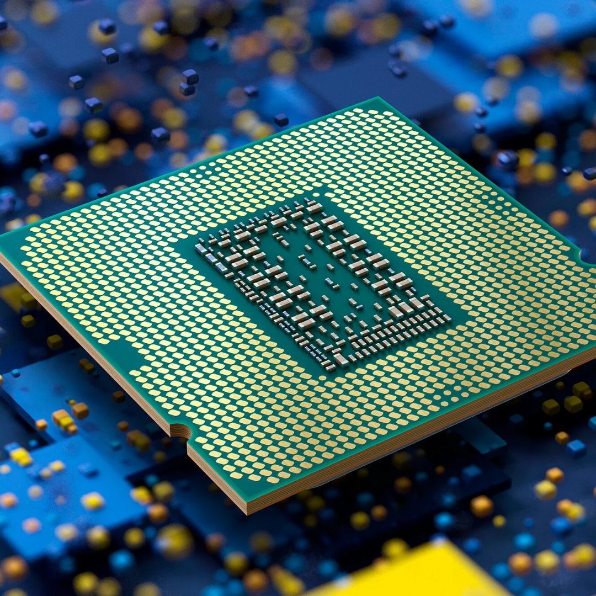

CPU (Prosessor)
Prosessoren er hjernen i datamaskinen, som utfører beregninger og prosesserer data.
Datamaskiner er komplekse enheter som består av flere nøkkelkomponenter som samarbeider for å utføre oppgaver. La oss se hvordan komponentene fungerer sammen.
Prosessoren er hjernen i datamaskinen, som utfører beregninger og prosesserer data.
RAM er det midlertidige minnet som brukes til å lagre data mens datamaskinen kjører.
Grafikkprosessoren er ansvarlig for å gjengi bilder og videoer.
Harddisker eller SSD-er lagrer data permanent.
Hovedkortet kobler sammen alle komponentene og fungerer som sentralen i datamaskinen.
Strømforsyningen gir strøm til alle komponentene i datamaskinen.
Kabinettet beskytter komponentene og gir struktur til datamaskinen.
Test kunnskapene dine om datamaskinens komponenter!